QE Next
QE Next Platform — Administration Guide | QE Next 2026 Release
Overview
QE Next is an enterprise-grade Quality Engineering solution built for teams to manage the full software testing lifecycle in one place. It operates on a multi-tenant architecture, where each tenant is an isolated workspace for a distinct organization or team.
Spin up dedicated workspaces for every team or organization — fully isolated, subscription-ready, and admin-controlled from day one.
Put the right people in the right roles — onboard users instantly and keep access tightly controlled across every workspace.
Bring your applications into QE Next and keep every registration, configuration, and detail organized in one place.
Getting Started
1. Tenant Management
Tenant Management is the administrative module that enables platform administrators to create and maintain isolated tenant workspaces. Each tenant represents a distinct organization or team with its own users, application registrations, validity, and test data.
| Capability | Description |
|---|---|
| View Tenants | Browse active and inactive tenant accounts with key metadata. |
| Create Tenant | Provision new tenant workspaces with a subscription expiry date and assigned owners. |
| Assign Owners | Link existing platform users or create new users on-the-fly as Tenant Owners. |
| Edit Tenant | Update subscription dates, add or remove owners, and modify tenant metadata. |
| Delete Tenant | Permanently decommission a tenant and all its associated data. |
Navigating to Tenant Management
Log in to QE Next using your credentials.
Click the left navigation menu icon (☰) in the sidebar to expand it.
Click Tenant Management from the navigation menu.
The Tenant Administration landing page loads at /tenant.
1.1 Tenant Administration Landing Page
The landing page lists all tenant records and provides key controls for administration.
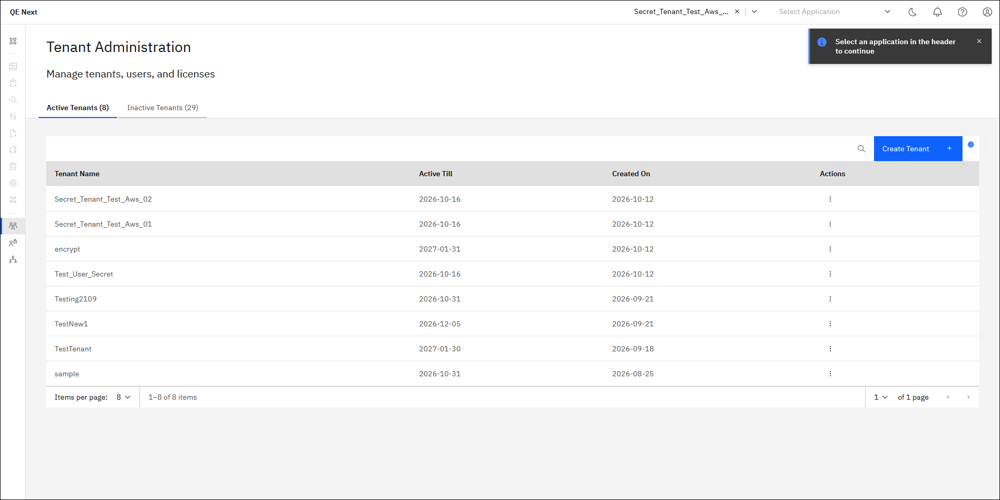
| UI Element | Description |
|---|---|
| Active Tenants tab | Default view. Displays tenants with active licenses. |
| Inactive Tenants tab | Displays tenants whose subscriptions have expired or been decommissioned. |
| Search bar (🔍) | Text input with magnifier icon. Filters the tenant list by name in real time. |
| Create Tenant + button | Opens the two-step Create Tenant wizard dialog. |
| Actions menu (⋮) | Per-row context menu offering Edit and Delete for each tenant. |
| Pagination controls | Items-per-page selector, page indicator, item count display, Previous/Next navigation arrows. |
Switching Views
Click the Active Tenants tab to view current subscriptions. Click Inactive Tenants to view expired or suspended accounts. Search operates within the currently selected tab only.
1.2 Creating a New Tenant
Creating a tenant follows below steps:
Opening the Create Tenant Dialog
Navigate to the Tenant Administration landing page.
Click "Create Tenant +" in the top-right area of the page.
The Create Tenant dialog opens on the General tab.
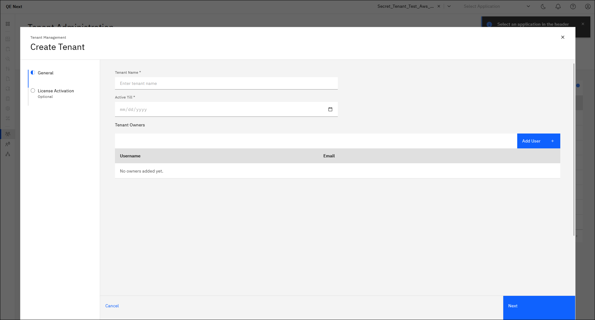
General Details Step
| Field | Required | Description |
|---|---|---|
| Tenant Name | ✓ Yes | Unique name for the tenant organization. Allowed characters: letters, numbers, spaces, hyphens (-), and underscores (_). |
| Active Till | ✓ Yes | Subscription expiry date. Click the field to open a calendar picker and select the desired date. |
| Tenant Owners | ✓ Yes | At least one owner must be assigned before proceeding. See Assigning Owners. |
Click "Next" to validate fields and advance to License Activation. Incomplete or invalid fields trigger inline validation errors and prevent navigation.
Assigning Tenant Owners
A Tenant Owner manages the tenant workspace. At least one owner must be assigned before a tenant can be created.
Adding an Existing Platform User
In the Tenant Owners section, click "Add User +".
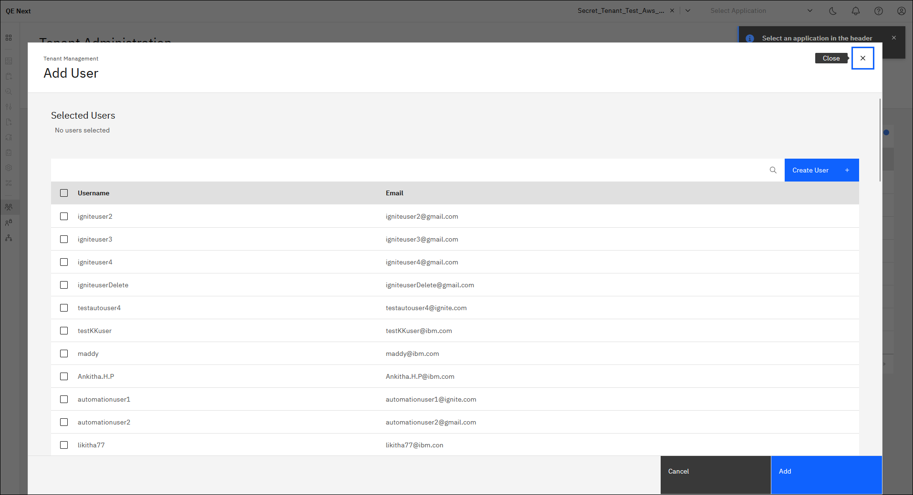
The Add User sub-dialog opens, listing all registered users with Username and Email columns.
Use the search bar (🔍) inside the dialog to filter users by name or email.
Select one or more users by checking the checkbox on each row. Selected users appear as chips (default: "No users selected").
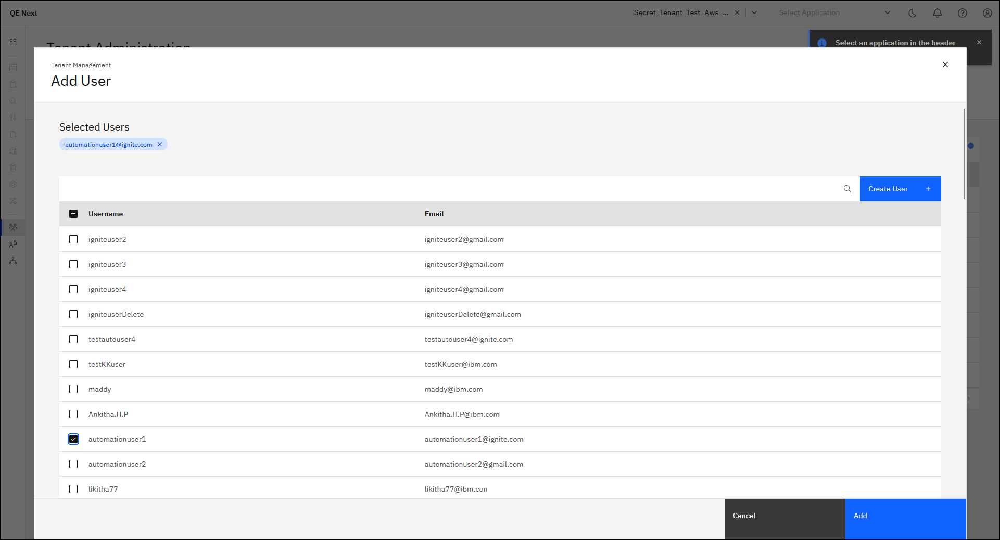
Click "Add" to confirm. Selected users appear in the Tenant Owners section with a remove (×) control each.
Click "Cancel" in the sub-dialog to discard the selection and return to the General tab.
Creating a New User as Tenant Owner
If the desired Tenant Owner has no platform account yet, you can create one without leaving the Create Tenant dialog.
Inside the Add Tenant Owner sub-dialog, click "Create User +".
The Create User form appears. Fill in the required fields:
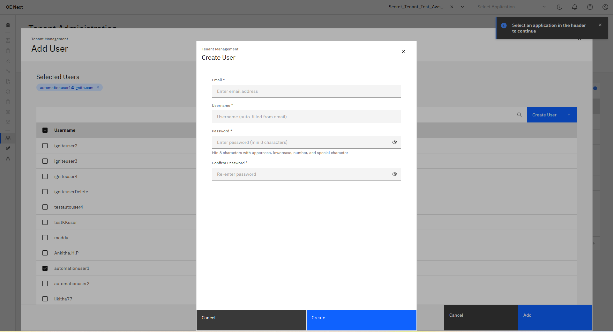
| Field | Required | Validation |
|---|---|---|
| ✓ | Valid email format — e.g. user@domain.com. | |
| Username | ✓ | Will be autopopulate based on the email address provided |
| Password | ✓ | Min. 8 characters; must include uppercase, lowercase, number, and special character. |
| Confirm Password | ✓ | Must exactly match the Password field. |
Click "Create". The new user is saved and immediately visible in the user list within the sub-dialog.
Use the search bar to locate the newly created user by username.
Check the user's row and click "Add" to link them as a Tenant Owner.
Click "Cancel" on the Create form at any point to discard without saving.
License Activation Step (Optional)
After completing the General step, the wizard advances to License Activation – Optional. The General step header displays a checkmark (✓) confirming it is complete.
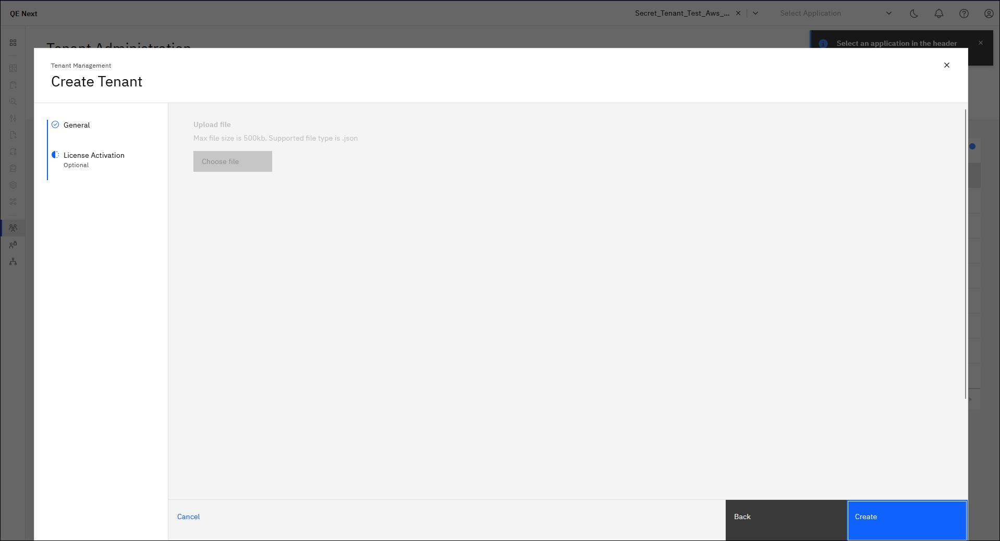
- This step is not mandatory. Currently its not available so user can proceed without activating a license.
- Click "Back" to return to the General tab — all previously entered data is retained.
- Click "Create" to finalize tenant provisioning.
1.3 Editing an Existing Tenant
Update a tenant's validity date or owners at any time.
Navigate to the Tenant Administration landing page.
Use the search bar to locate the tenant you want to edit.
Click the Actions (⋮) icon on the tenant's row.
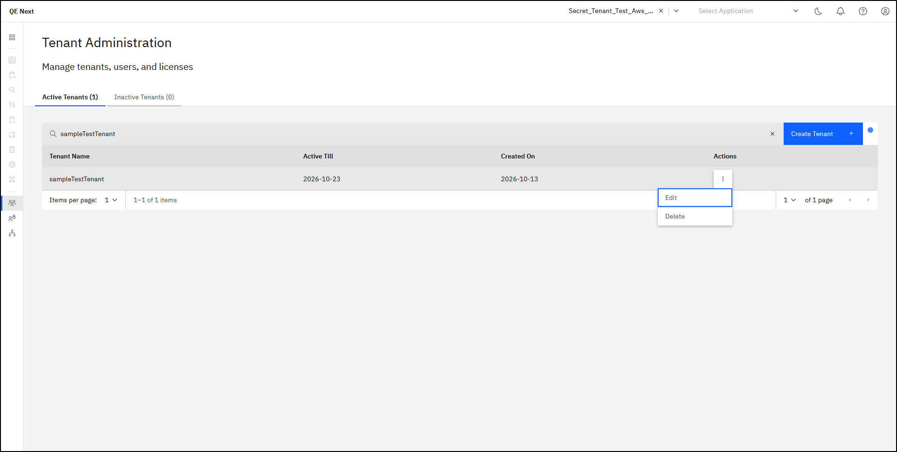
Select "Edit". The Edit Tenant dialog opens (same two-step structure as Create).
On the General tab, make the required changes:
- Update Active Till date via the calendar picker.
- Add new owners using "Add User +".
- Remove an existing owner by clicking × next to their name.
Click "Next" to proceed to the License Activation step.
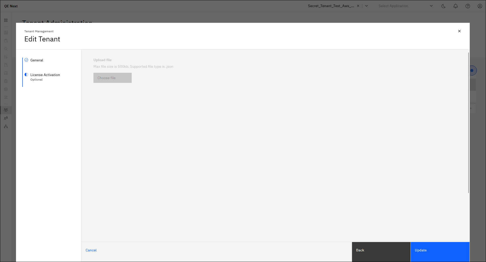
Click "Update" to save changes. Tenant Details will be updated.
1.4 Deleting a Tenant
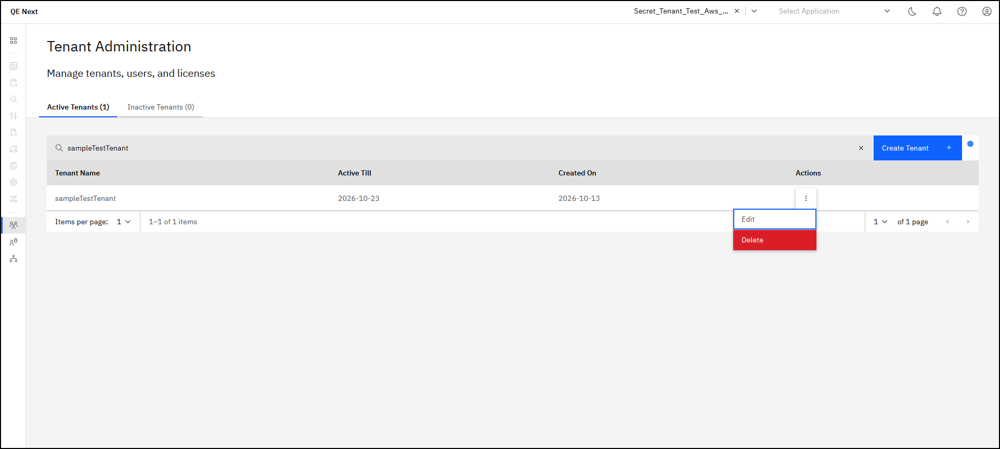
Navigate to the Tenant Administration landing page.
Use the search bar to locate the target tenant.
Click the Actions (⋮) icon on the tenant's row.
Select "Delete". A confirmation dialog appears: "Are you sure you want to delete [Tenant Name]?"
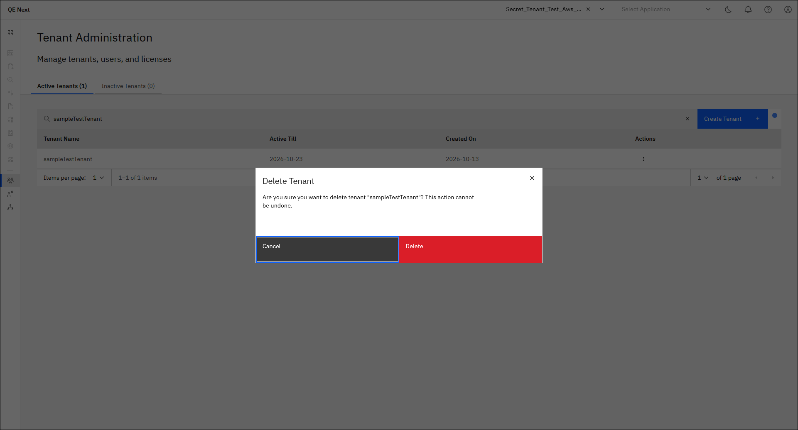
| Button | Outcome |
|---|---|
| Confirm Delete | Permanently removes the tenant workspace, all associated users, application registrations, and test data. |
| Cancel | Dismisses the dialog. The tenant remains unchanged in the Active list. |
1.5 Searching and Filtering Tenants
Click the 🔍 search icon to activate the search input field.
Type a tenant name or partial name. The list filters in real time.
Clear the field to restore the full tenant list.
1.6 Managing Inactive Tenants
A tenant becomes inactive once its Active Till date has passed. Inactive tenants are listed on the Inactive Tenants tab and can be modified the same way as active tenants: a Super Admin can search for them, edit them, or delete them. Editing lets you extend the validity date to make a tenant active again, and you can add or remove its owners at the same time.
Viewing Inactive Tenants
Open the Tenant Administration landing page.
Click the Inactive Tenants tab. The tab shows the total count, for example Inactive Tenants (29).
Use the 🔍 search icon to find a tenant by name, or use the pagination controls and the Items per page selector to browse the list.
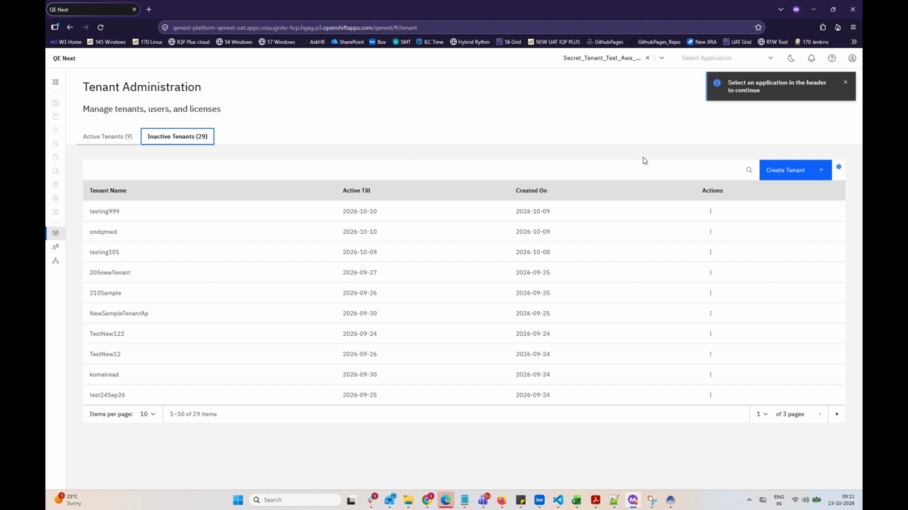
Reactivating an Inactive Tenant
To make an inactive tenant active again, extend its Active Till date.
On the Inactive Tenants tab, search for and locate the tenant.
Click the Actions (⋮) icon on the tenant's row and select "Edit".
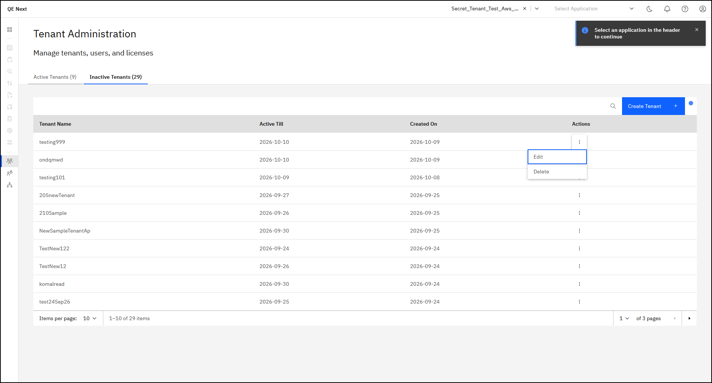
The Edit Tenant dialog opens on the General tab. The Tenant Name is read-only. The Active Till field is empty because the previous date has expired, and the current Tenant Owners are listed below it.
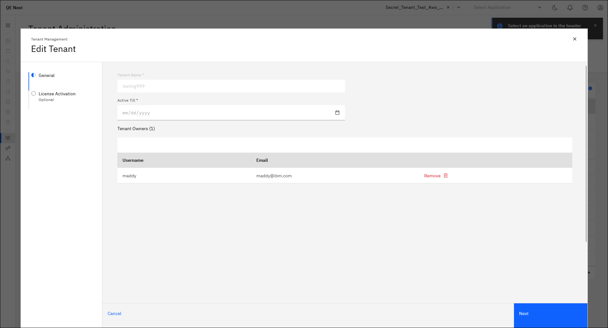
Click the Active Till field and choose a new future date from the calendar picker. Past dates are disabled. You can also type the date in mm/dd/yyyy format.
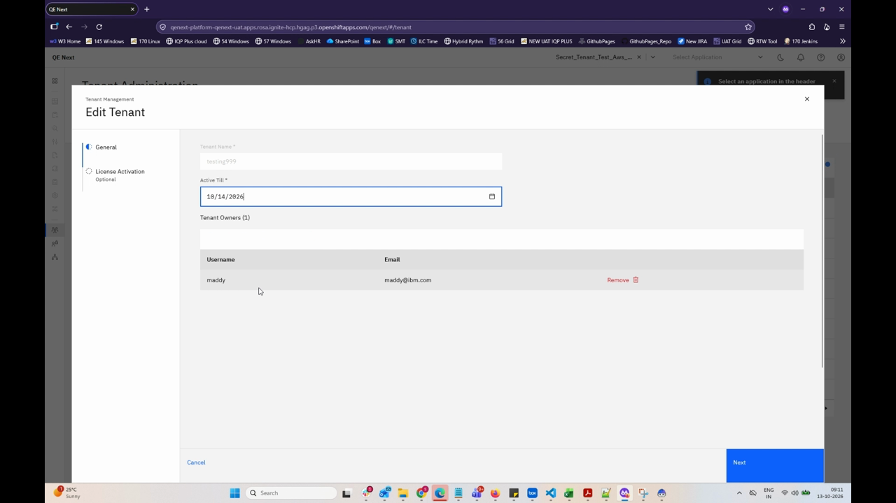
Review the Tenant Owners list and update it if needed (see below).
Click "Next" to go to the optional License Activation step, then click "Update" to save. The tenant moves from the Inactive Tenants tab to the Active Tenants tab.
Adding or Removing Tenant Owners
- To remove an owner, click Remove (trash icon) at the end of the owner's row. The list then shows "No owners added yet."
- To add an owner, use "Add User +" to select an existing user or create a new one, exactly as described in Assigning Tenant Owners.
- A tenant must have at least one owner. If you remove every owner and click "Next", the dialog shows the error "Validation error: Please add at least one tenant owner." and does not continue.
Permanently Deleting an Inactive Tenant
On the Inactive Tenants tab, locate the tenant and click its Actions (⋮) icon.
Select "Delete". A confirmation dialog appears: "Are you sure you want to delete tenant "[Tenant Name]"? This action cannot be undone."
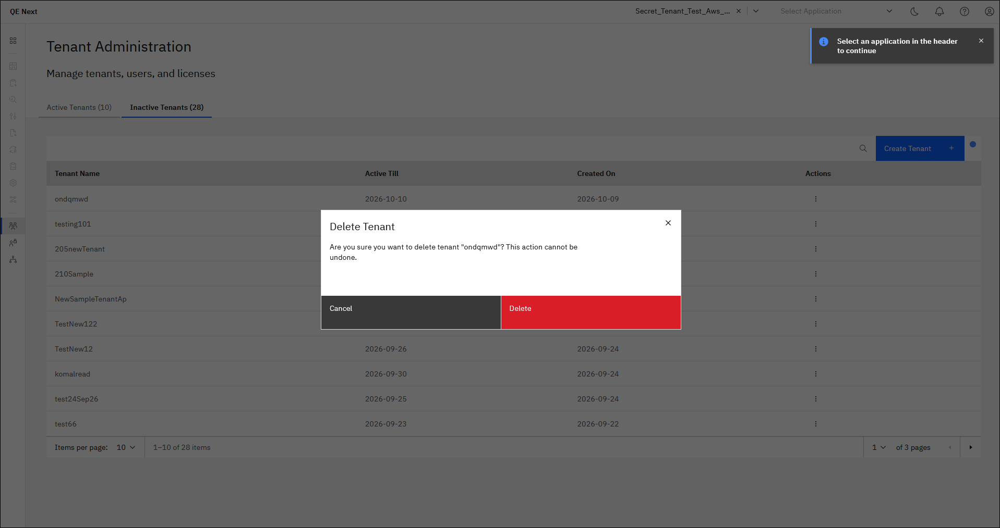
| Button | Outcome |
|---|---|
| Delete | Permanently removes the tenant and its associated data. The tenant no longer appears in the Inactive Tenants list. |
| Cancel | Dismisses the dialog. The tenant remains unchanged in the Inactive list. |
2. User Management
User Management enables Tenant Administrators to onboard platform users, assign roles, control application access, and revoke accounts within a tenant workspace.
| Capability | Description |
|---|---|
| View Users | Browse active and inactive user accounts with their roles, application access, and validity dates. |
| Add User | Provision a new platform user with an assigned role and application scope. |
| Edit User | Update a user's role, application access, and password. |
| Delete User | Permanently revoke a user's access and remove their record from the platform. |
| Search & Filter | Dynamically filter the user list by User ID or email address. |
Navigating to User Management
Log in to QE Next using your credentials.
Click the left navigation menu icon (☰) in the sidebar.
Click User Management from the navigation menu.
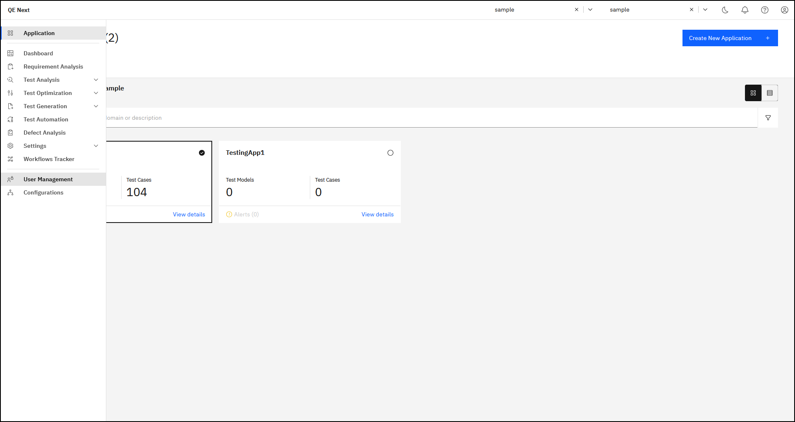
2.1 User Management Landing Page
The landing page lists all users within the tenant workspace with their assigned roles, application access, and key timestamps.
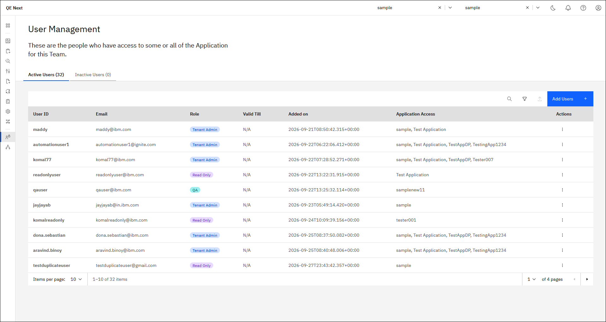
| UI Element | Description |
|---|---|
| Active Users tab | Default view. Lists all currently authorized users with valid access. Shows total count, e.g. Active Users (11). |
| Inactive Users tab | Lists deactivated or expired user accounts. |
| Add Users button | Opens the Add User modal dialog to provision a new user. |
| Search field (🔍) | Filters the user table dynamically by User ID or email as the user types. |
| User ID | Unique identifier for the user, auto-extracted from their email prefix. |
| The user's registered email address. | |
| Role | Assigned platform role displayed as a badge: Tenant Admin, QA Lead, QA User, or Read Only. |
| Valid Till | Account expiry date. Shown as N/A if no expiry is set. |
| Added On | Timestamp when the user was provisioned. |
| Application Access | Comma-separated list of applications the user can access. |
| Actions (⋮) | Per-row context menu offering Edit and Delete options. |
| Pagination controls | Items-per-page selector, item count display, and Next/Previous navigation. |
2.2 Adding a New User
Navigate to the User Management landing page.
Click the "Add Users +" button in the top-right area. The Add User modal dialog opens.
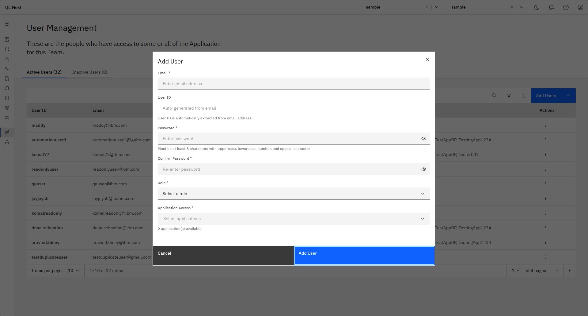
Enter a valid Email address. The User ID field is automatically populated from the email prefix.
Enter a Password that meets the complexity requirements (min. 8 characters, uppercase, lowercase, number, and special character).
Re-enter the same password in the Confirm Password field.
Select a Role from the dropdown: Tenant Admin, QE Lead, QE, or Read Only.
Click the Application Access dropdown to select one or more applications the user is authorized to access.
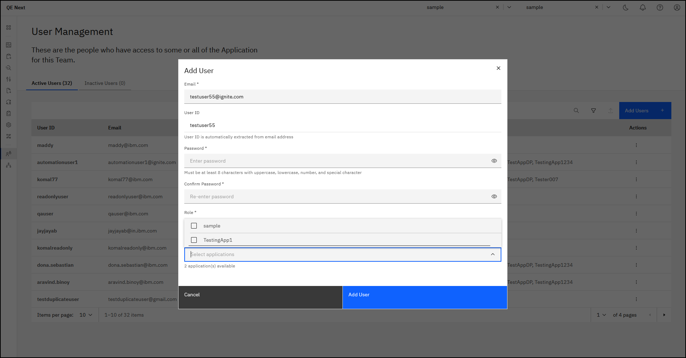
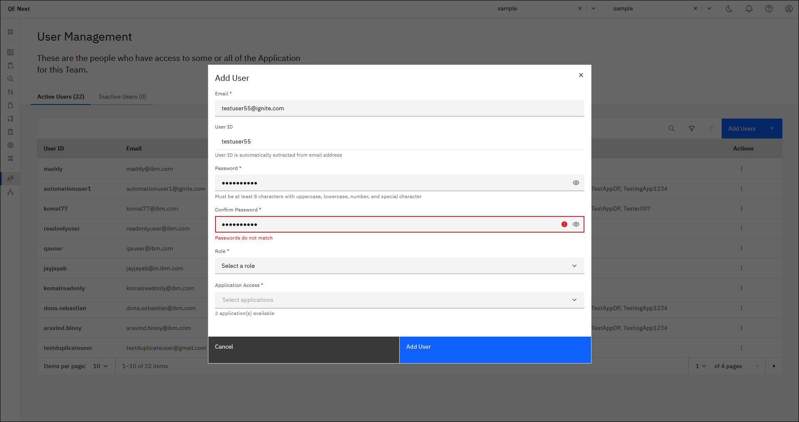
Click "Add User" to create the account. A green success toast confirms: "User created successfully". The new user appears in the Active Users table and the count increments.
Click "Cancel" at any point to dismiss the dialog without saving.
2.3 Editing an Existing User
On the User Management landing page, use the search field to locate the user if needed.
Click the Actions (⋮) icon on the user's row.
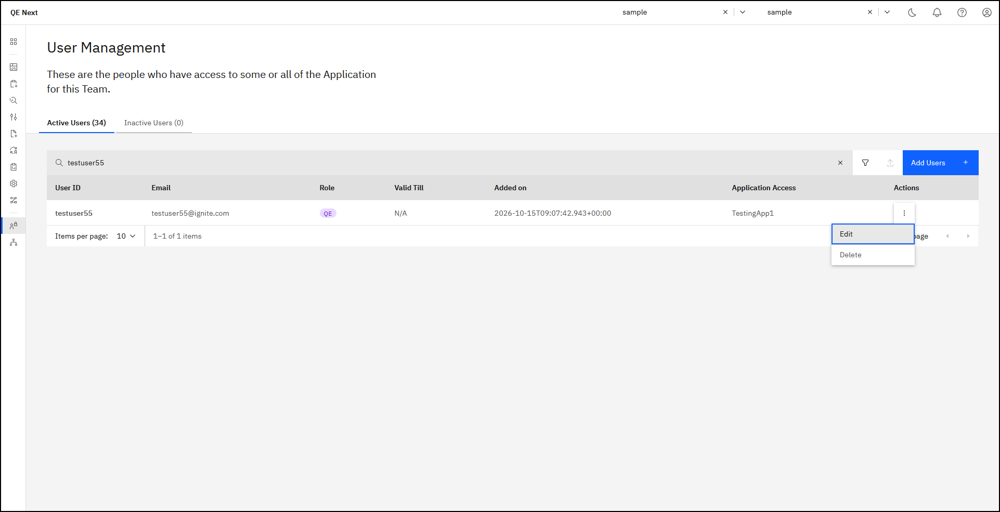
Select "Edit" from the context menu. The Edit User modal opens with all fields pre-populated.
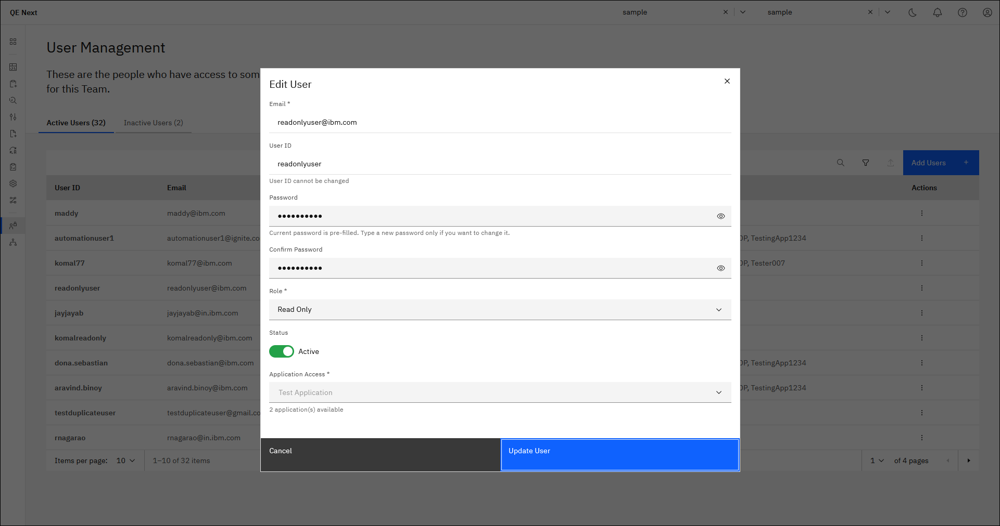
Update the required fields — Password, Role, or Application Access.
Click "Update User" to save. A success toast confirms the update.
Click "Cancel" or the close (×) icon to discard all changes.
2.4 Deleting a User
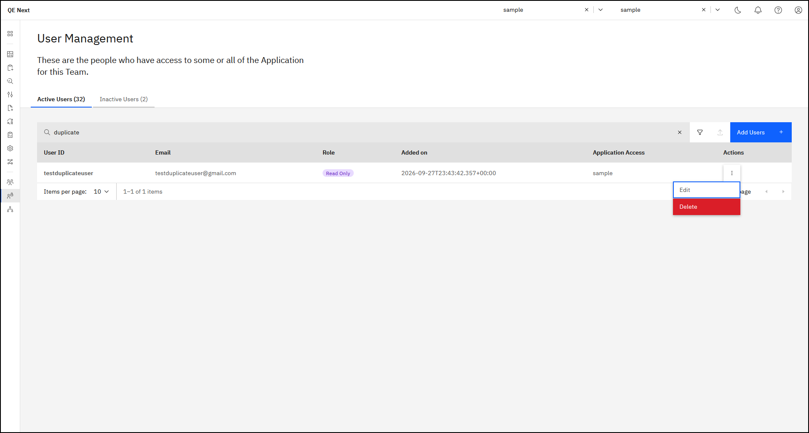
Locate the user in the table and click the Actions (⋮) icon on their row.
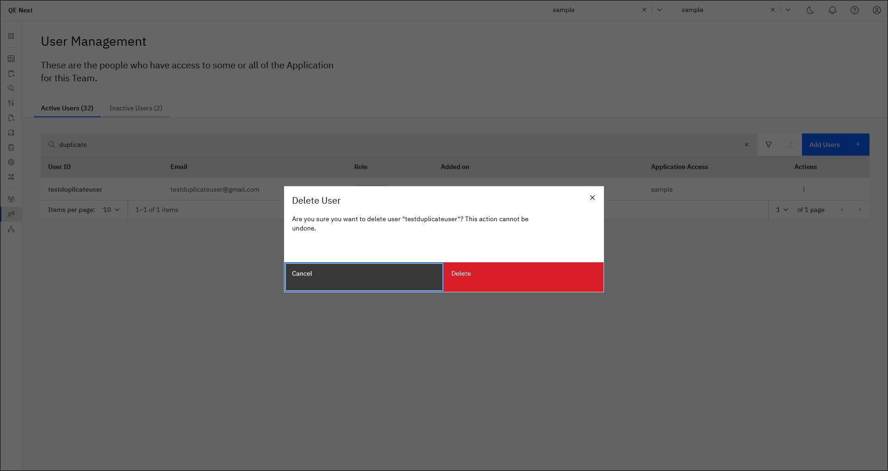
Select "Delete". A confirmation dialog appears asking: "Are you sure you want to delete [user]?"
| Button | Outcome |
|---|---|
| Confirm Delete | Permanently deletes the user. Success toast: "User deleted successfully". User is removed from the Active list. |
| Cancel | Dismisses the dialog. The user remains unchanged in the Active list. |
2.5 Searching and Filtering Users
Click the 🔍 search icon on the User Management landing page to activate the search input.
Type a User ID or email address (or partial value). The table filters dynamically in real time.
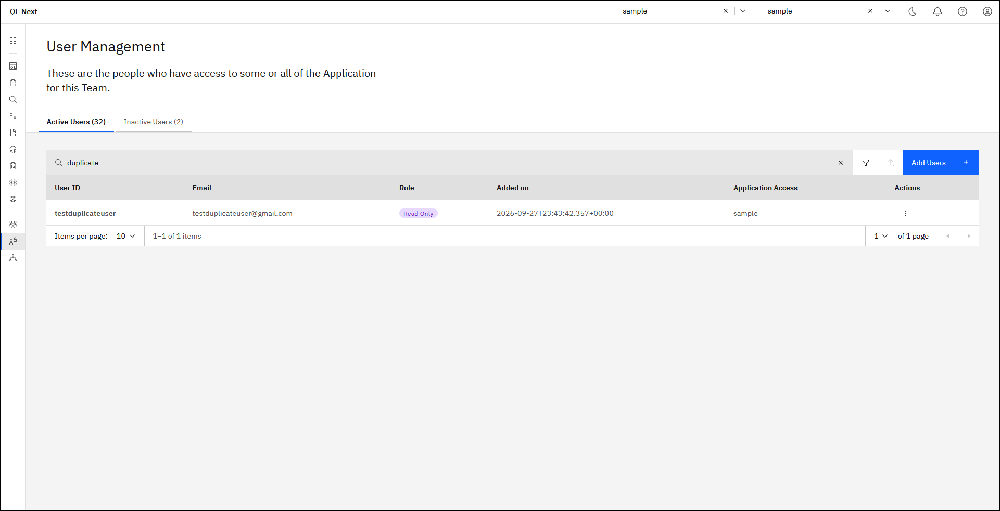
If no records match, the table shows a "No users found" message with the prompt "Try adjusting your search or filter to find what you are looking for."
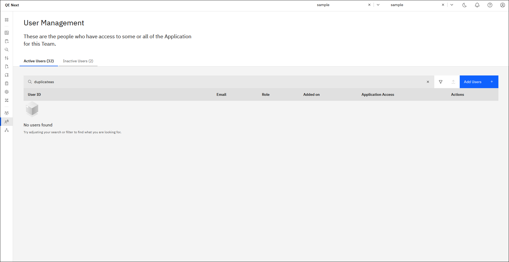
Click the ✕ icon in the search bar or clear the field to restore the full user list.
2.6 Field Reference
Add User / Edit User Modal
| Field | Type | Mandatory | Notes |
|---|---|---|---|
| Text input | ✓ Yes | Valid email format required (e.g. user@domain.com). Inline error shown for invalid format. | |
| User ID | Auto-filled text | ✓ Yes | Automatically extracted from the email prefix. Read-only in Edit mode — displays "User ID cannot be changed". |
| Password | Password input | ✓ Yes | Min. 8 characters; must include uppercase, lowercase, number, and special character. Pre-filled in Edit mode. |
| Confirm Password | Password input | ✓ Yes | Must exactly match the Password field. Inline error: "Passwords do not match". |
| Role | Dropdown | ✓ Yes | Options: Tenant Admin, QA Lead, QA User, Read Only. Alert "Please select a role" if submitted blank. |
| Application Access | Multi-select dropdown | ✓ Yes | Select one or more registered applications. Displayed as comma-separated names or chips in the user table. |
2.7 Validation Rules & Error Messages
| Scenario | Error / Behaviour |
|---|---|
| Invalid email format entered | Inline error shown below the Email field |
| Email or Password left blank on submit | Inline required error shown on the respective field |
| Password does not meet complexity rules | Inline error: "Must be at least 8 characters with uppercase, lowercase, number, and special character" |
| Confirm Password does not match Password | Inline error: "Passwords do not match" |
| Role dropdown not selected on submit | Alert dialog: "Please select a role" — must be dismissed before retrying |
| Duplicate email or User ID already exists | Banner error: "User already exists" |
| Search returns no matching records | Table state: "No users found — Try adjusting your search or filter to find what you are looking for." |
3. Application Management
Application Management enables teams to register, configure, and monitor software applications under test. Each application is an isolated project within a tenant workspace, tracked with live quality metrics including test model counts, test case counts, automation coverage percentage, and active alerts.
| Capability | Description |
|---|---|
| View Applications | Browse all registered applications as metric cards (grid view) or a table (list view). |
| Create Application | Register a new application with name, description, domain, and automation tool. |
| View Details | Open the Application Overview page showing full test asset breakdown. |
| Edit Application | Update description, domain, and automation tool. Application Name is read-only after creation. |
| Git Sync | Trigger synchronisation with the linked Git repository to pull latest models and assets. |
| Delete Application | Permanently remove the application and all its associated test models, cases, and automation configurations. |
| Search & Filter | Filter application cards dynamically by name in real time. |
Navigating to Application Management
Log in to QE Next using your credentials.
Upon login, the Applications is the default landing page at /app-selection.
Alternatively, click the Applications item in the left navigation sidebar at any time to return
3.1 Applications Landing Page
The Applications landing page displays all registered applications as metric cards, giving an at-a-glance view of quality health across every project.
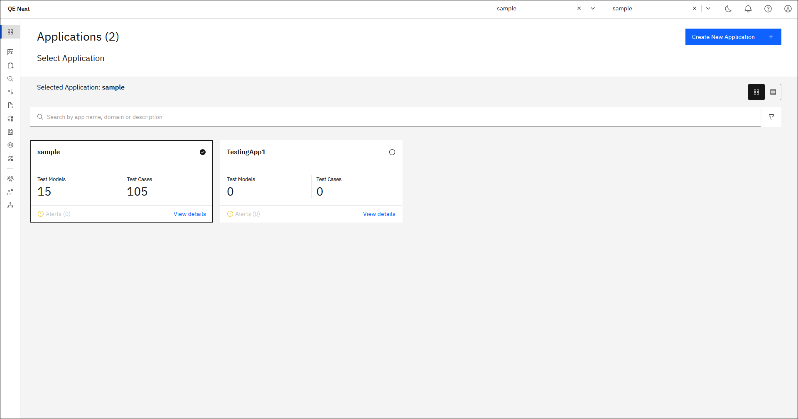
| UI Element | Description |
|---|---|
| Page Title | "Applications" — the default landing page after login. |
| Global Header App Selector | Dropdown in the top header bar. Sets the active workspace context and unlocks full module navigation. |
| Search box (🔍) | Filters application cards dynamically by name as the user types. Displays "No applications found" if no match. |
| Grid View / List View toggle | Switch between card grid layout (default) and table list layout. |
| Create New Application button | Opens the Create New Application dialog. |
| Application card | Shows application name with live metrics: Test Models count, Test Cases count, Automation Coverage %, and Alerts count. |
| View details link | Opens the Application Overview page with full test asset breakdown for that application. |
| Actions menu (⋮) | Per-card context menu offering Edit, Git Sync, and Delete. |
| Pagination controls | Items-per-page selector, page indicator, and Next/Previous navigation. |
3.2 Creating a New Application
On the Applications landing page, click the "Create New Application" button.
The Create New Application dialog opens.
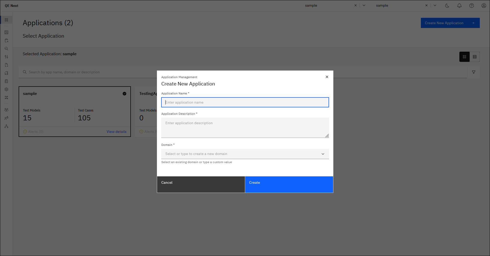
Enter a unique Application Name. This field is mandatory and cannot be changed after creation.
Enter Application Description.
Select or type a Domain. Choose from the existing dropdown list, or type a new custom domain name directly into the field — it will be registered and selected automatically.
Click "Create" to submit. A success toast confirms: "Application created successfully". The dialog closes and the new application card appears on the applications page with metrics initialised at zero.
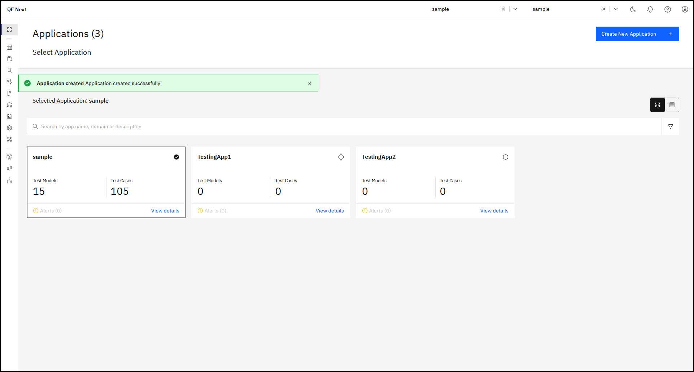
Click "Cancel" at any point to dismiss the dialog without saving.
3.3 Viewing Application Details
On the Applications landing page, locate the application card you want to inspect.
Click the "View details" link on the card.
The Application Overview page opens, showing the full test model inventory, linked test case numbers, automation coverage, and associated configurations.
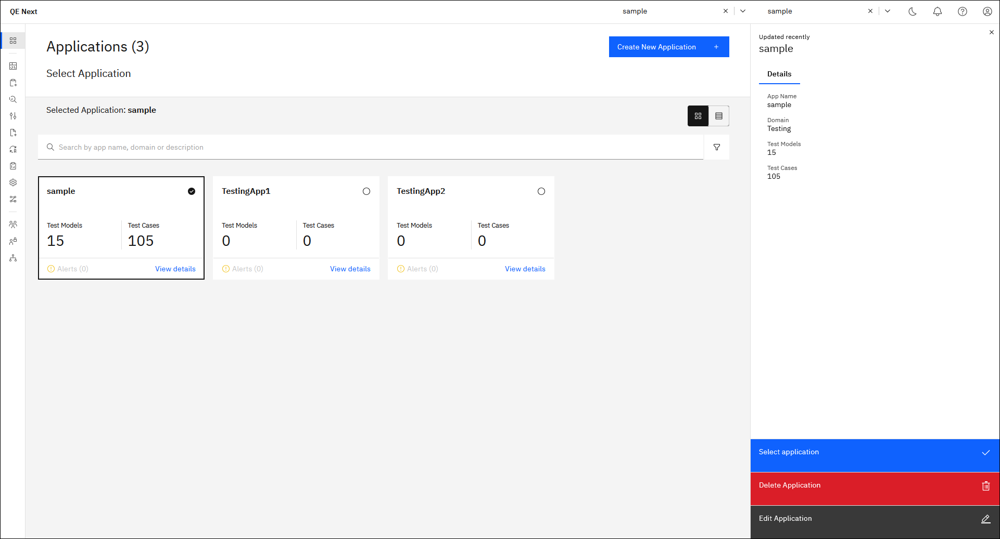
3.4 Editing an Application
On the Applications landing page, click either the Actions (⋮) icon on the selected application in Table view or on the Edit Application option displayed on Application Overview page.
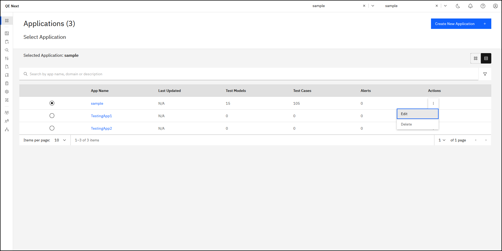
Select "Edit" from the context menu.
The Edit Application dialog opens. The Application Name field is disabled and read-only.
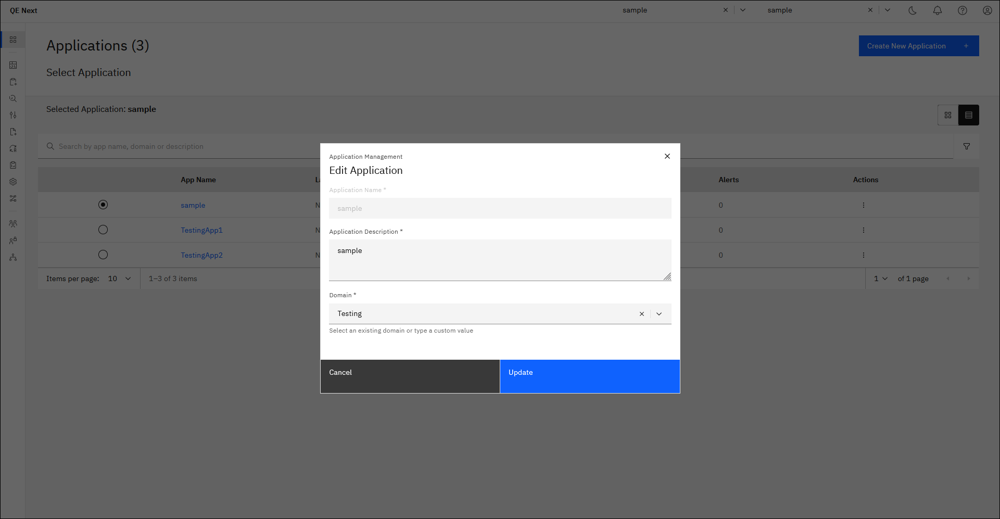
Update the Application Description, Domain as required.
Click "Update" to save. A success toast confirms: "Application updated successfully".
Click "Cancel" to discard all pending changes and close the dialog.
3.5 Deleting an Application
On the Applications landing page, click either the Actions (⋮) icon on the selected application in Table view or on the Edit Application option displayed on Application Overview page.
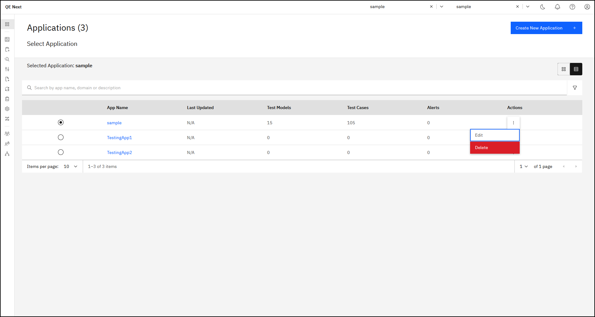
Select "Delete". A confirmation dialog appears with the title "Delete Application".
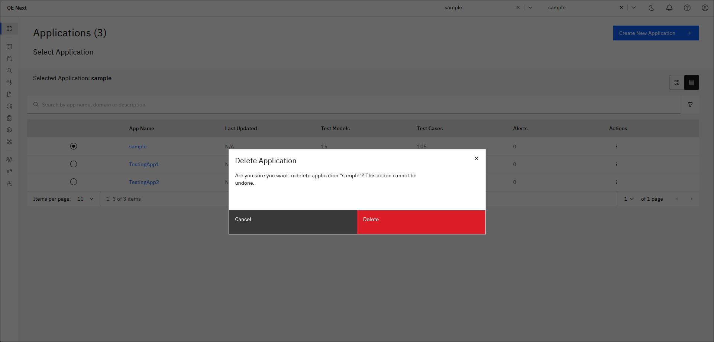
| Button | Outcome |
|---|---|
| Confirm Delete | Permanently removes the application and all associated test models, test cases, and automation configurations. Success toast: "Application deleted successfully". Card is removed from the landing page. |
| Cancel | Dismisses the dialog. The application remains unchanged on the landing page. |
3.6 Searching and Filtering Applications
On the Applications landing page, click inside the 🔍 search box.
Type an application name or partial name. Application cards filter dynamically in real time.
If no application matches, the landing page shows: "No applications found".
Clear the search field to restore the full application landing page.
Role-Based Access Control
QE Next enforces role-based permissions across all modules. The table below shows the access level each role has on every platform resource. CRUD = Create, Read, Update, Delete; Read = read-only access; NA = no access.
| Resource | Super Admin | Tenant Admin | QA Lead | QA / Testers | Read Only |
|---|---|---|---|---|---|
| /tenantadmin | CRUD | NA | NA | NA | NA |
| /user | CRUD | CRUD | Read | NA | NA |
| /application | CRUD | CRUD | CRUD | Read | Read |
| /settings | CRUD | CRUD | CRUD | Read | Read |
| /configurations | CRUD | CRUD | CRUD | Read | Read |
| /requirements | CRUD | CRUD | CRUD | CRUD | Read |
| /testanalysis | CRUD | CRUD | CRUD | CRUD | Read |
| /optimization | CRUD | CRUD | CRUD | CRUD | Read |
| /testgeneration | CRUD | CRUD | CRUD | CRUD | Read |
| /testautomation | CRUD | CRUD | CRUD | CRUD | Read |
| /defectanalytics | CRUD | CRUD | CRUD | CRUD | Read |
| /dashboard | CRUD | CRUD | CRUD | Read | Read |
| /workflowtracker | Read | Read | Read | Read | Read |
CRUD — Full Create, Read, Update, and Delete access | Read — View-only access, no modifications | NA — No access; resource is not visible to this role